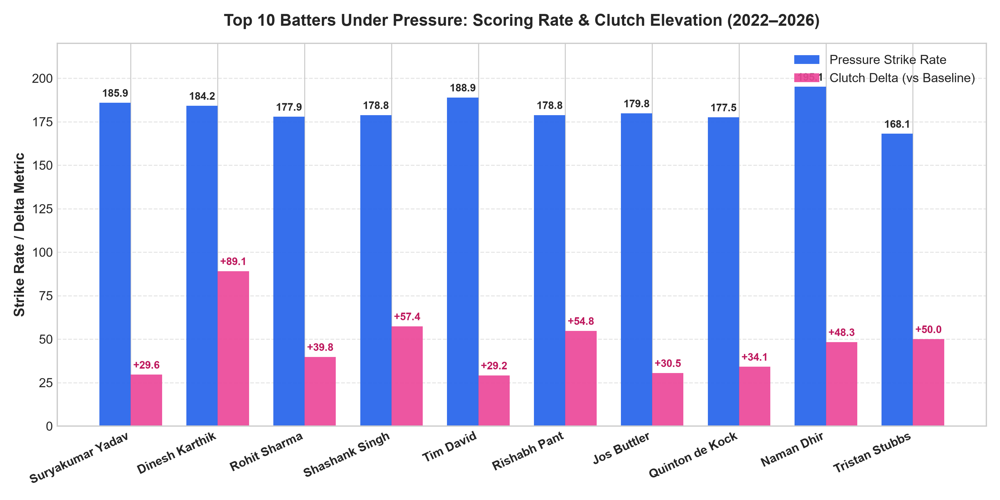
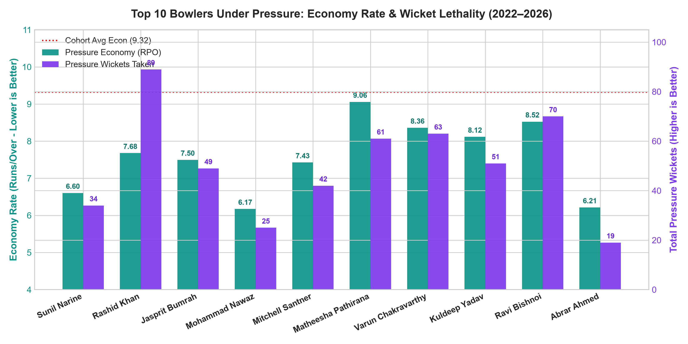
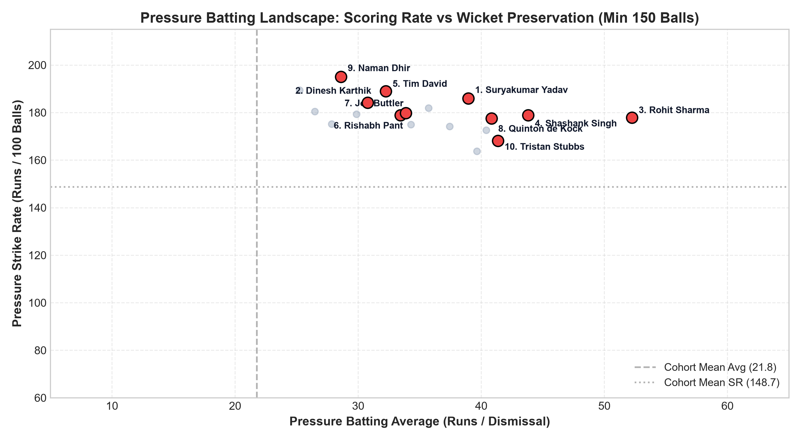
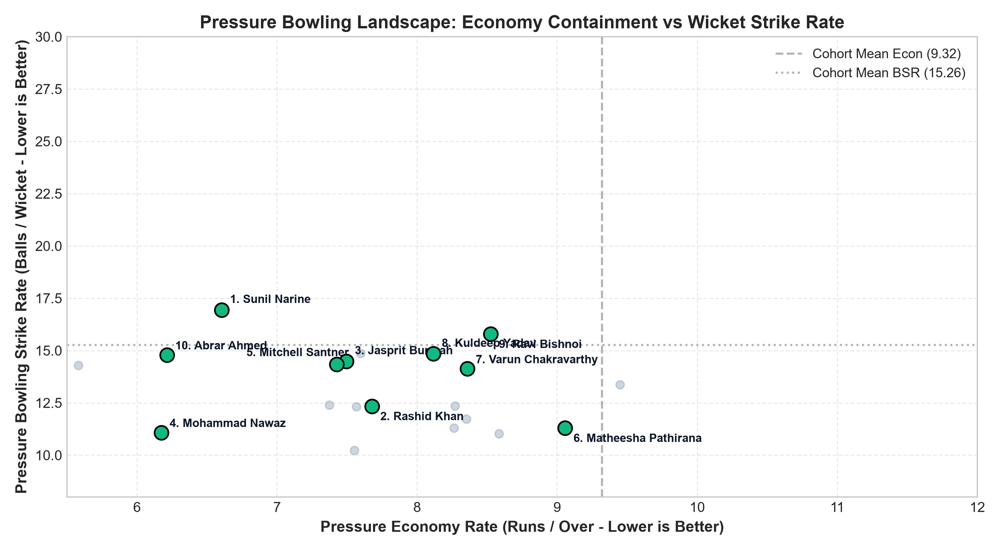

Rajasthan Royals Analytics Challenge — Round 1 Comprehensive Methodology Report
Dataset: IPL & T20 International Data (2022–2026) | 883 Matches | 200,999 Deliveries
| Rank | Top 10 Batters Under Pressure | Key Metric Highlights | Top 10 Bowlers Under Pressure | Key Metric Highlights |
|---|---|---|---|---|
| 1 | Suryakumar Yadav | 1,753 Runs | 185.90 SR | +29.57 ΔSR | Sunil Narine | 6.60 Econ | 34 Wkts | +0.42 ΔEcon |
| 2 | Dinesh Karthik | 954 Runs | 184.17 SR | +89.13 ΔSR | Rashid Khan | 89 Wkts | 7.68 Econ | 12.3 BSR |
| 3 | Rohit Sharma | 418 Runs | 177.87 SR | 52.25 Avg | Jasprit Bumrah | 7.50 Econ | 49 Wkts | 35.2% Dots |
| 4 | Shashank Singh | 701 Runs | 178.83 SR | 43.81 Avg | Mohammad Nawaz | 6.17 Econ | 25 Wkts | 11.1 BSR |
| 5 | Tim David | 1,419 Runs | 188.95 SR | +29.16 ΔSR | Mitchell Santner | 7.43 Econ | 42 Wkts | 66.7% Consist |
| 6 | Rishabh Pant | 769 Runs | 178.84 SR | +54.76 ΔSR | Matheesha Pathirana | 61 Wkts | 11.3 BSR | 60.8% Consist |
| 7 | Jos Buttler | 1,016 Runs | 179.82 SR | 58.1% Consist | Varun Chakravarthy | 63 Wkts | 8.36 Econ | 38.4% Dots |
| 8 | Quinton de Kock | 490 Runs | 177.54 SR | 40.83 Avg | Kuldeep Yadav | 51 Wkts | 8.12 Econ | 68.3% Consist |
| 9 | Naman Dhir | 515 Runs | 195.08 SR | +48.31 ΔSR | Ravi Bishnoi | 70 Wkts | 8.52 Econ | 1,105 Balls |
| 10 | Tristan Stubbs | 1,158 Runs | 168.07 SR | 41.36 Avg | Abrar Ahmed | 6.21 Econ | 19 Wkts | 41.3% Dots |
Pressure is defined by the sensitivity and volatility of win probability at the delivery level. The system isolates 72,639 high-pressure deliveries (36.1% of the dataset) from 128,360 baseline deliveries (63.9%):
Player reliability is assessed through a multi-dimensional composite index combining:




| Rank | Batter | Balls | Runs | P_SR | Base_SR | ΔSR | P_Avg | Bnd% | Dot% | Consist% |
|---|---|---|---|---|---|---|---|---|---|---|
| 1 | Suryakumar Yadav | 943 | 1,753 | 185.90 | 156.33 | +29.57 | 38.96 | 28.2% | 26.7% | 55.9% |
| 2 | Dinesh Karthik | 518 | 954 | 184.17 | 95.04 | +89.13 | 30.77 | 28.2% | 27.4% | 36.8% |
| 3 | Rohit Sharma | 235 | 418 | 177.87 | 138.08 | +39.79 | 52.25 | 27.2% | 28.9% | 56.2% |
| 4 | Shashank Singh | 392 | 701 | 178.83 | 121.43 | +57.40 | 43.81 | 24.2% | 21.9% | 43.2% |
| 5 | Tim David | 751 | 1,419 | 188.95 | 159.79 | +29.16 | 32.25 | 27.6% | 28.4% | 47.4% |
| 6 | Rishabh Pant | 430 | 769 | 178.84 | 124.07 | +54.76 | 33.43 | 26.3% | 28.1% | 51.3% |
| 7 | Jos Buttler | 565 | 1,016 | 179.82 | 149.29 | +30.53 | 33.87 | 25.7% | 23.5% | 58.1% |
| 8 | Quinton de Kock | 276 | 490 | 177.54 | 143.41 | +34.13 | 40.83 | 24.3% | 22.5% | 66.7% |
| 9 | Naman Dhir | 264 | 515 | 195.08 | 146.77 | +48.31 | 28.61 | 29.9% | 25.0% | 43.8% |
| 10 | Tristan Stubbs | 689 | 1,158 | 168.07 | 118.07 | +50.00 | 41.36 | 21.9% | 25.8% | 41.4% |
| Rank | Bowler | Balls | Wkts | P_Econ | Base_Econ | ΔEcon | P_BSR | Dot% | Bnd% | Consist% |
|---|---|---|---|---|---|---|---|---|---|---|
| 1 | Sunil Narine | 576 | 34 | 6.60 | 7.02 | +0.42 | 16.9 | 36.1% | 9.7% | 78.4% |
| 2 | Rashid Khan | 1,098 | 89 | 7.68 | 7.27 | -0.41 | 12.3 | 35.4% | 13.8% | 68.8% |
| 3 | Jasprit Bumrah | 710 | 49 | 7.50 | 7.10 | -0.40 | 14.5 | 35.2% | 14.2% | 67.6% |
| 4 | Mohammad Nawaz | 277 | 25 | 6.17 | 7.49 | +1.31 | 11.1 | 40.1% | 8.7% | 59.3% |
| 5 | Mitchell Santner | 602 | 42 | 7.43 | 7.45 | +0.03 | 14.3 | 35.4% | 12.0% | 66.7% |
| 6 | Matheesha Pathirana | 689 | 61 | 7.93 | 8.47 | +0.54 | 11.3 | 33.7% | 15.5% | 60.8% |
| 7 | Varun Chakravarthy | 890 | 63 | 8.36 | 7.76 | -0.60 | 14.1 | 38.4% | 17.0% | 57.9% |
| 8 | Kuldeep Yadav | 757 | 51 | 8.12 | 7.95 | -0.17 | 14.8 | 33.7% | 14.1% | 68.3% |
| 9 | Ravi Bishnoi | 1,105 | 70 | 8.52 | 8.16 | -0.36 | 15.8 | 36.7% | 16.8% | 58.8% |
| 10 | Abrar Ahmed | 281 | 19 | 6.21 | 6.96 | +0.74 | 14.8 | 41.3% | 9.3% | 63.0% |